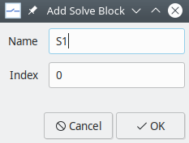
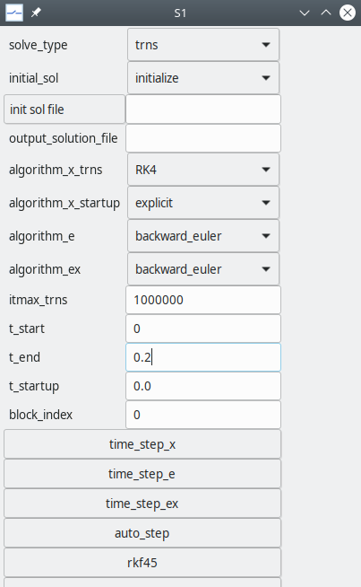

Solve Blocks¶
After a circuit schematic is prepared, we need to convey to the simulator what kind of simulation needs to be performed, which method to use, which output parameters should be saved, etc. This task is performed by a solve block.
Many of the solve block statements are related to the numerical methods employed by GSEIM. Some basic familiarity with the following topics would therefore help in understanding the solve block statements.
- modified nodal analysis
- Newton-Raphson method
- methods for solving ODEs
- steady-state waveform computation
- start-up simulation
Solve blocks are of two types:
startupsolve block for start-up simulationtrnssolve block for transient simulation
Multiple solve blocks per project are allowed. Here are a few situations where multiple solve block would be useful:
- We want to perform a start-up simulation and use the solution as a starting point for transient simulation.
- We have performed transient simulation from \(t = 0\) to \(t = t_1\). We want to continue from \(t_1\) and perform transient simulation up to \(t_2\), without having to repeat the \(0 < t < t_1\) part.
In most cases, we are interested in a single transient simulation, and therefore only one solve block is required.
A new solve block can be added by clicking on
SolveBlocks
\(\rightarrow\)
Add Solve Block.
A dialog box for a new solve block appears as shown below.
{kind=link}
The solve block needs to be assigned a suitable name, e.g, S1.
The index field determines the order in which solve blocks are
executed. For example, if there are two solve blocks with names
S1, S2 and indices 0, 1, respectively, the solve block
S1 will be executed first, followed by S2.
When a solve block is added, it gets a set of default parameter values
from the file
$GSEIM_MASTER/gseim_grc/src/gseim/data/gseim_slvparms.in
(see comments about $GSEIM_MASTER in
Getting started).
These values can be edited by clicking on
SolveBlocks
\(\rightarrow\)
Edit Solve Block.
A dialog box with parameters appears as shown below.
{kind=link}
We will now describe the solve block parameters. In the interest of brevity, we will use the following definitions.
| Name | meaning |
|---|---|
x circuit |
circuit has only xbe’s |
e circuit |
circuit has only ebe’s |
ex circuit |
circuit has ebe’s and xbe’s |
The following points may be noted.
- Parameters names starting with
x_(or ending with_x) generally apply toxcircuits. - Parameters names starting with
e_(or ending with_e) generally apply toecircuits. - Parameters names starting with
ex_(or ending with_ex) generally apply toexcircuits. - Parameters with
_nr_in their names are related to the Newton-Raphson method.
Solve Block Statements¶
solve_type:- trns for transient simulation
- startup for start-up simulation
- ssw for steady-state waveform simulation
initial_solis related to the initial solution, i.e., the starting point for transient simulation. There are three options.- initialize for initializing variables before transient simulation
- previous for continuing with the solution obtained in the previous solve block as the initial solution
- read_from_file for reading the initial solution from a file
init sol file: This field is relevant ifinitial_solis read_from_file. It is assumed that the solution file already exists, and the user can click on theinit sol filebutton and select it from the file menu.output_solution_file: name of the solution file; it needs to be supplied if the user wants to save the solution file (at the end of the simulation). The complete file path may be specified; if only the file name is specified, the file would get created in~/gseim_grc/gseim/output/.algorithm_x_trns: transient simulation algorithm; it applies toxcircuits.algorithm_x_startup: start-up simulation algorithm; it applies toxcircuits.algorithm_e: transient simulation algorithm; it applies toecircuits.algorithm_ex: transient simulation algorithm; it applies toexcircuits.itmax_trns: maximum number of time points allowed in transient simulation. This is a safety feature to prevent the user from mistakenly generating large output files that could fill up the disk.t_start: starting time for transient simulationt_end: ending time for transient simulationt_startup: time at which start-up simulation is to be performed (ignored for transient simulation)block_index: index of the solve block being edited. If there are multiple solve blocks, the one with the lowestblock_indexis executed first, and so on. (Not relevant if there is only one solve block)time_step_x: Parameters in this group apply toxcircuits.tstep0_x: time step. For constant time-step methods, this parameter specifies the uniform time step. For auto time-step methods, it specifies the initial time step.delt_min_x: smallest time step allowed during transient simulationdelt_max_x: largest time step allowed during transient simulation
time_step_e: Parameters in this group apply toecircuits.tstep0_e: time step. For constant time-step methods, this parameter specifies the uniform time step. For auto time-step methods, it specifies the initial time step.delt_min_e: smallest time step allowed during transient simulationdelt_max_e: largest time step allowed during transient simulation
time_step_ex: Parameters in this group apply toexcircuits.tstep0_ex: time step. For constant time-step methods, this parameter specifies the uniform time step. For auto time-step methods, it specifies the initial time step.delt_min_ex: smallest time step allowed during transient simulationdelt_max_ex: largest time step allowed during transient simulation
auto_step: Parameters in this group apply when thebackward_euler_autoortrz_automethod is selected.factor_step_increase: factor by which time step is increased in successive iterations.factor_step_decrease: factor by which time step is decreased in successive iterations.itmax_stepred: maximum number of successive reductions in the time step at a given time point.
rkf45: Parameters in this group apply when theRKF45method is selected.rkf45_tolr: tolerance for the RKF45 methodrkf45_fctr_min: lower limit on multiplier \(k\) of RKF45 algorithm where \(\Delta t_{\mathrm{new}} = k \times \Delta t_{\mathrm{new}}\).rkf45_fctr_max: upper limit on multiplier \(k\) of RKF45 algorithm
bs23: Parameters in this group apply when theBS23method is selected.bs23_tolr: tolerance for the BS23 methodbs23_fctr_min: lower limit on multiplier \(k\) of BS23 algorithmbs23_fctr_max: upper limit on multiplier \(k\) of BS23 algorithm
TRBDF2: Parameters in this group apply when theTRBDF2method is selected.trbdf2_tolr: tolerance for the TR-BDF2 methoditmax_trbdf2: maximum number of successive reductions in the time step at a given time point when TR-BDF2 algorithm is selected.
write_to_console: Parameters in this group are related to printing iteration number in transient simulation (i.e., time point number) and time to the console.write_iter_n_x: Interval in terms of number of iterations after which GSEIM should write the iteration number (time point number) to the console. Applies toxandexcircuits.write_time_x: This parameter should be set to yes if the time should also be printed to the console (along with the time point number). Applies toxandexcircuits.write_iter_n_e: Interval in terms of number of iterations after which GSEIM should write the iteration number (time point number) to the console. Applies toeandexcircuits.write_time_e: This parameter should be set to yes if the time should also be printed to the console (along with the time point number). Applies toeandexcircuits.
x_nr: Parameters in this group are related to NR convergence forxcircuits.x_nr_itermax: maximum number of Newton-Raphson (NR) iterationsx_nr_dmp: yes if damping should be used in NR iterationsx_nr_dmp_itermax: number of NR iterations for which damping should be appliedx_nr_dmp_k: damping factor for NR iterationsx_nr_itermax0,x_nr_dmp0,x_nr_dmp_itermax0,x_nr_dmp_k0: like the above NR parameters except that these apply to the first time point.x_nr_check_delx_all: yes if the \(\Delta x\) norm should be used for convergence (see delx norm)x_nr_eps_delx_all: tolerance value for the \(\Delta x\) normx_nr_write_rhs2: yes for writing the 2-norm to the console (used for debugging)
e_nr: Parameters in this group are related to NR convergence foreandexcircuits.e_nr_itermax: maximum number of Newton-Raphson (NR) iterationse_nr_dmp: yes if damping should be used in NR iterationse_nr_dmp_itermax: number of NR iterations for which damping should be appliede_nr_dmp_k: damping factor for NR iterationse_nr_itermax0,e_nr_dmp0,e_nr_dmp_itermax0,e_nr_dmp_k0: like the above NR parameters except that these apply to the first time point.e_nr_check_spice: yes if the SPICE norm should be used for convergence (see SPICE norm)e_nr_check_delx_all: yes if the \(\Delta x\) norm should be used for convergence (see delx norm)e_nr_write_rhs2: yes for writing the 2-norm to the console (used for debugging)e_nr_spice_vntol,e_nr_spice_abstol,e_nr_spice_reltol: the SPICE normsVNTOL,ABSTOL,RELTOL, respectively (see SPICE norm)
ex_nr: Parameters in this group are related to NR convergence forexcircuits.ex_nr_itermax: maximum number of Newton-Raphson (NR) iterationsex_nr_dmp: yes if damping should be used in NR iterationsex_nr_dmp_itermax: number of NR iterations for which damping should be appliedex_nr_dmp_k: damping factor for NR iterationsex_nr_itermax0,ex_nr_dmp0,ex_nr_dmp_itermax0,ex_nr_dmp_k0: like the above NR parameters except that these apply to the first time point.ex_nr_check_delx_all: yes if the \(\Delta x\) norm should be used for convergence (see delx norm)ex_nr_eps_delx_all: tolerance value for the \(\Delta x\) normex_nr_write_rhs2: yes for writing the 2-norm to the console (used for debugging)
SSW: parameters in this group are related to steady-state waveform computation.ssw_period,ssw_frequency: period and frequency, respectively. One of these should be specified.ssw_period_mult: number of SSW periods to be simulated. Only one period is really required to be simulated. However, the user may want to view a graph showing a few periods, and therefore this option is made available.ssw_nr_eps_rhs: 2-norm to check for convergence of the outer NR loop in the SSW flow chartssw_ndiv: This parameter is used to compute the time step (given by the period divided byssw_ndiv). If the time step is already specified (usingtstep0_x,tstep0_e, ortstep0_ex), thenssw_ndivis ignored.ssw_nr_itermax: Maximum number of outer NR iterations (see SSW flow chart)ssw_nr_dmp: yes if damping is to be used for the outer NR iterationsssw_nr_dmp_k: damping factor \(k\) (\(0 < k < 1\)) for the outer NR loop (see damping). Relevant only ifssw_nr_dmpis set to yes.ssw_nr_dmp_itermax: number of outer NR iterations for which damping should be applied.